pixmusiccontrol
网易云音乐桌面像素控制台
已就绪
保存配置

预设与显示模式
播放状态
RETRO_BADGE
黑胶唱片联动机械唱臂
COMPACT_TAG
紧凑双行网易云标签
LARGE_CURRENT
大号时间重点显示
设备与通信配置
设备局域网 IP 与连接状态
连接设备
未连接
MAC:
--
一键填 Topic
屏幕亮度
50%
Web 服务端口
CDP 调试端口
MQTT 设备通信
MQTT Broker 地址
MQTT 发布主题
一键下发 MQTT 配置至设备
通用全局配色
当前模式专属配色
配置已同步！